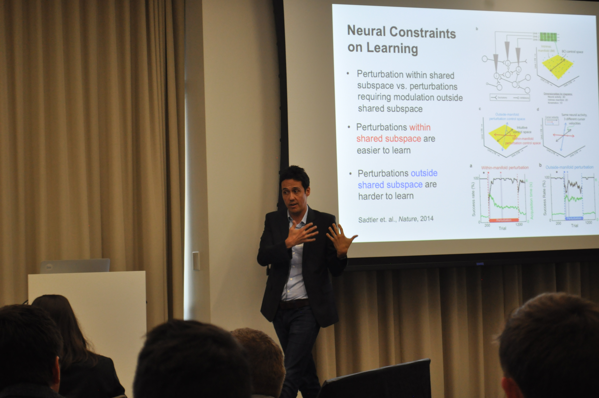

A little over two weeks ago the Chan Zuckerberg Biohub kicked off its first ever Neuroengineering Symposium. It was a momentous event bringing together some of the sharpest minds from Stanford, UCSF, and UC Berkeley to discuss, share, and debate all that has been acomplished and all that is still ahead in the field of neuroengineering.
This time is not only pivotal for neuroengineering research and it applications but also for big data, machine learning, and many other statistical learning techniques. Although the talk recordings will not be made public, I complied a list of all of the papers disucssed to serve as a resource for all neuroengineering, machine learning, neuroscience, and neural-hardware researchers. I hope they are useful for you!
Hardware Design Session:
Michel Maharbiz (UC Berkeley) - Deep and Through the Skull: Pushing the Limits of Ultrasonic Implantables
 Recordings:
Papers:
Recordings:
Papers:
Ada Poon (Stanford) - Wireless Neuromodulation
Papers:
Algorithms Session:
Edward Chang (UCSF) - Encoding and Decoding Human Speech
Papers:
Jure Leskovec (Stanford) - How Powerful Are Graph Neural Networks
 Papers:
Papers:
Jose Carmena (UC Berkeley) - Neural Mechanisms Underlying Neuroprosthetic Skill Learning

Slide Deck:
Papers:
Development & Behavioral Analysis Session:
Tomasz Nowakowski (UCSF) - Development of Functional Areas in the Cerebral Cortex
 Papers:
Papers:
Lisa Gunaydin (UCSF) - Fronto-Striatal Control of Approach-Avoidance Behavior
Papers:
Neural Tool Development Session:
Laura Waller (UC Berkeley) - 3D Neural Activity Tracking with Compact Lensless Microscopes
 Tutorials:
Papers:
Tutorials:
Papers:
Loren Frank (UCSF) - New Tools for Understanding Distributed Patterns of Brain Activity
Tutorials:
Papers:
If you like my content let me know, by tweeting or subscribing below!